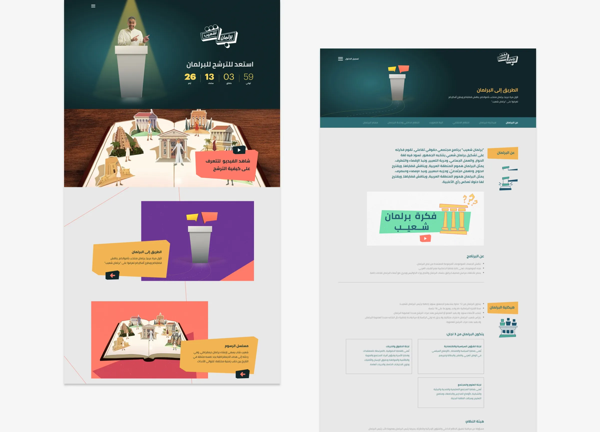
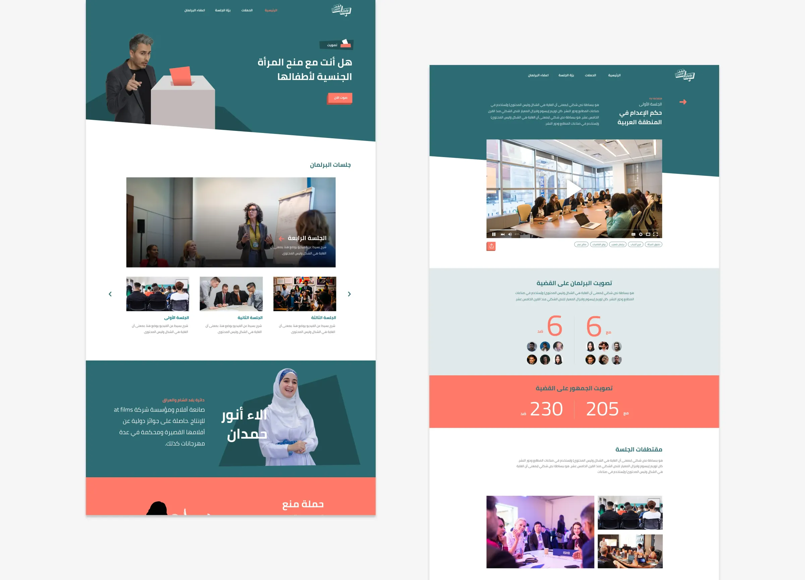
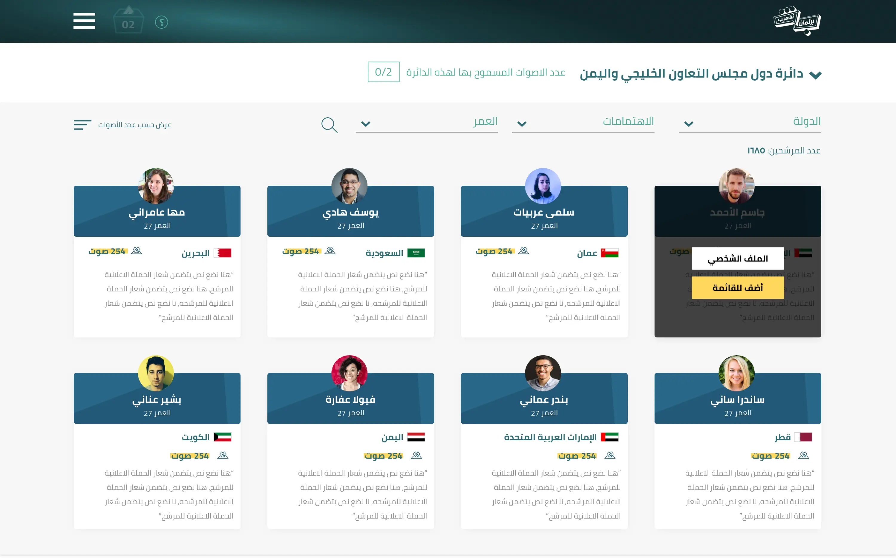
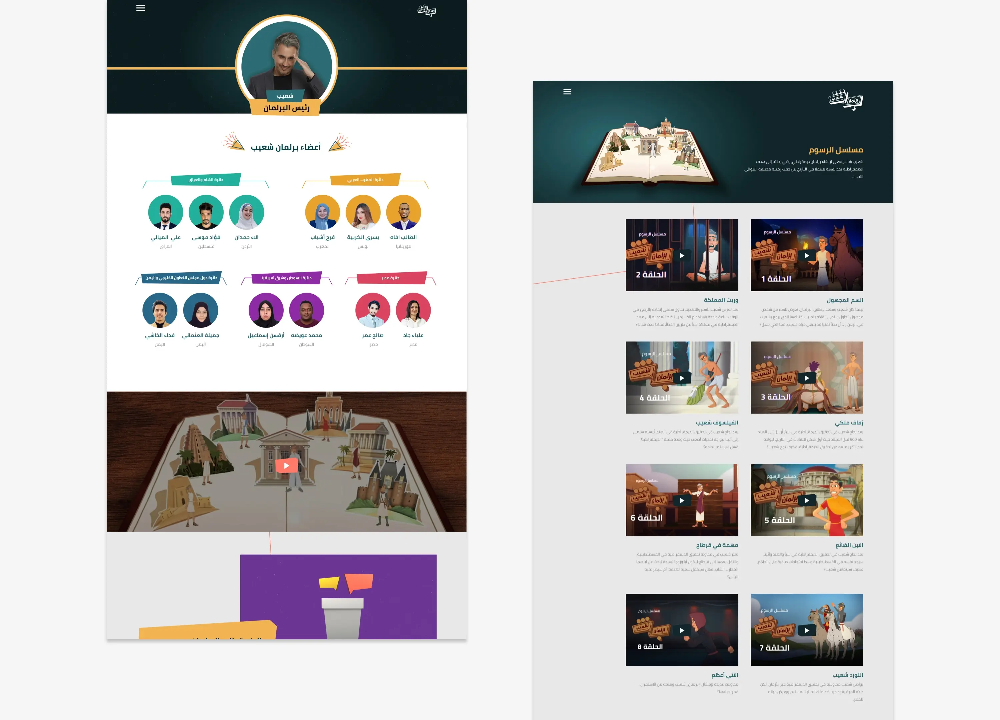
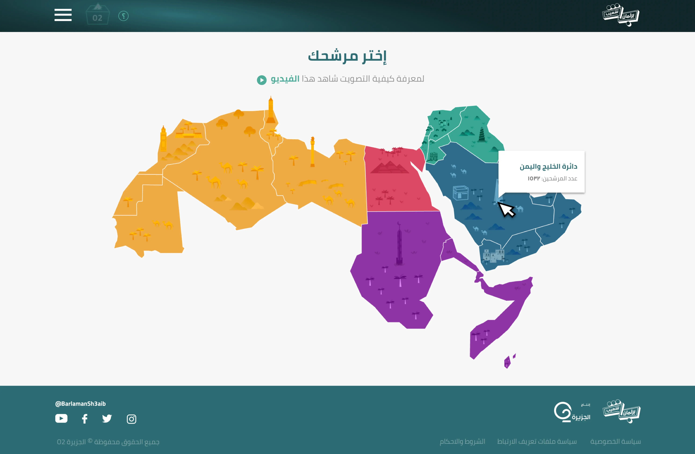
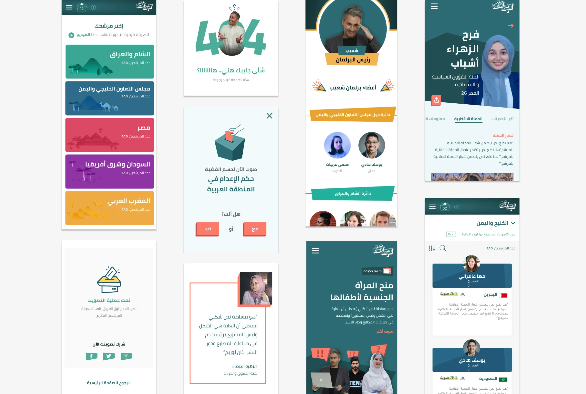

Barlaman Shuaib
Website for an interactive community and rights programme built around a parliament its audience elects.
The public votes in a people’s parliament. It takes on the problems of the Arab region and proposes solutions that reflect what the majority actually thinks.
The rules of the chamber: dialogue, working together, saying what you think. No exclusion, no extremism.
Built at Syntax, where I worked as a front-end developer. My role on this project was the front end.
THE CALL FOR CANDIDATES
Before there could be a parliament there had to be candidates. A countdown to nominations, a video on how to run, and the rules written out: twelve elected seats, three committees.

IN SESSION
Every session puts one question to the chamber, then to everyone watching. The members’ vote and the public’s vote sit one above the other, so you can see when they disagree.

CASTING A VOTE
Pick a candidate from your region, filtered by country, interests and age. Two votes per region, and the ballot box in the header counts what you have left.

THE CHAMBER
Shuaib chairs; the elected members sit grouped by region. Alongside runs an animated series in which Shuaib travels through history trying to build a democracy.

CHOOSE YOUR REGION
The Arab world split into five voting regions. Hover one to see how many candidates are running there.

RESPONSIVE

THE OBSESSING PART
Every project here has a detail nobody asked for and nobody will spot. I fixed it anyway. Bring me one more.